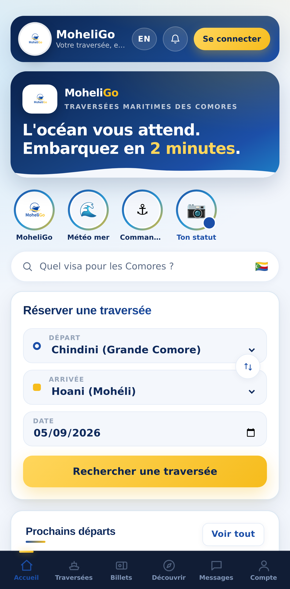

MoheliGoTRAVERSÉES MARITIMES
MOHÉLI · GRANDE COMORE
RÉSERVE TA TRAVERSÉEDEPUIS TON TÉLÉPHONE.
1
Choisis ton départ.
2
Paie avec MVola ou Holo.
3
Reçois ton billet en quelques secondes.

UNE VRAIE PERSONNE TE RÉPOND
WhatsApp +269 479 43 28
Billet à code QR, il reste dans ton téléphone.
Et chaque soir, on publie l'état de la mer du lendemain.
PAIEMENT PAR
moheligo.com